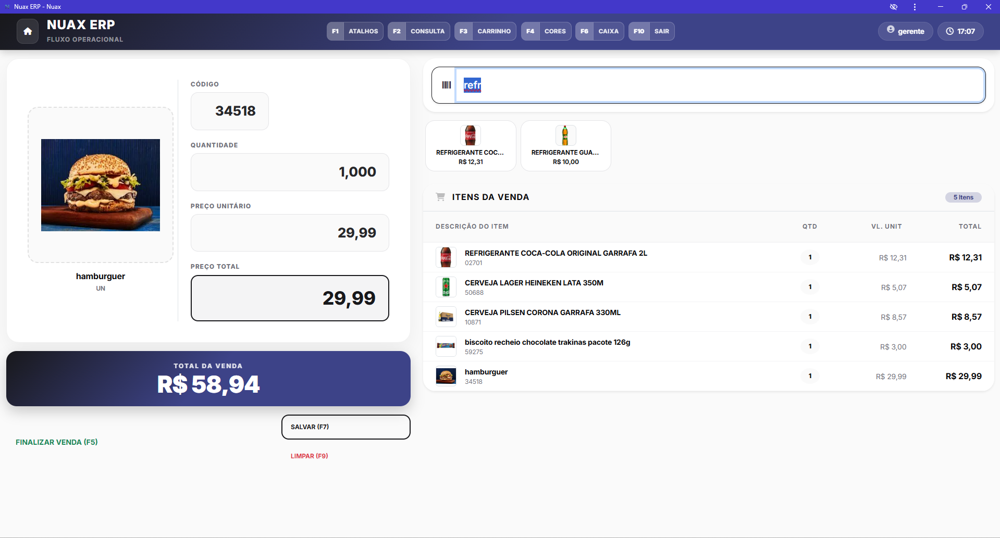
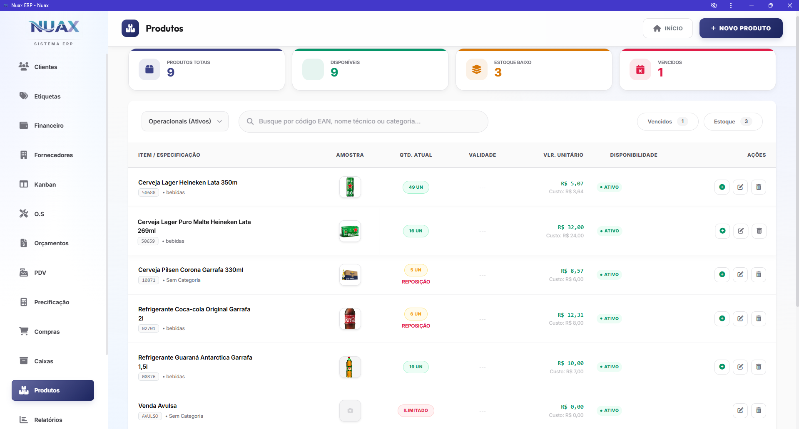
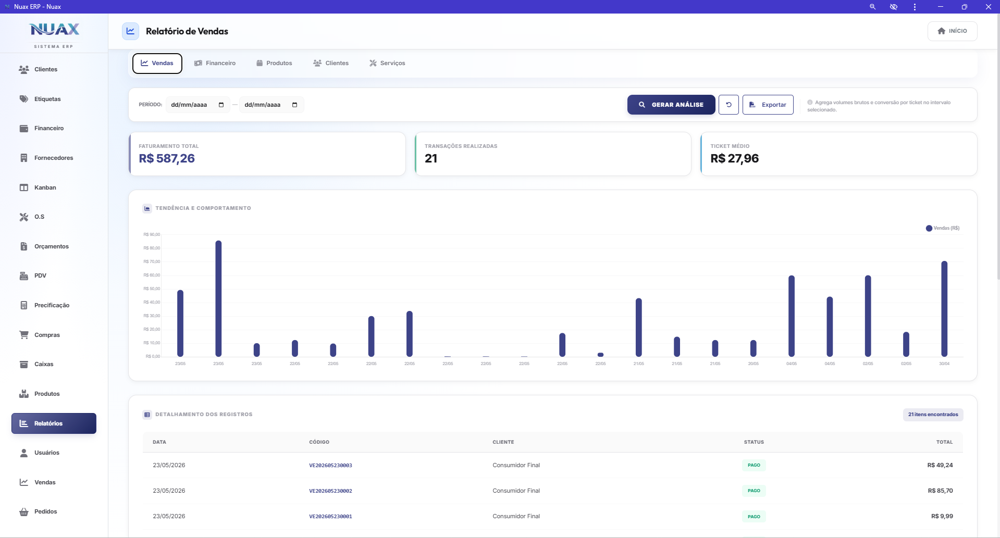

Zero dependência
estratégica.
Internet cai. Servidor trava. Assinatura aumenta. Com o NUAX, nada disso paralisa sua empresa. Toda a gestão roda localmente — na velocidade de um banco de dados nativo — e o backup vai para a sua própria nuvem pessoal, sem passar por ninguém.
Começar agoraOpera Sem Internet
Venda, emita, gerencie e atenda — mesmo com a internet completamente fora. Sem travamento, sem espera, sem prejuízo.
Resposta Instantânea
Telas e consultas respondem em milissegundos. Sem loading, sem espera — tudo na velocidade do seu próprio computador.
Dados na Sua Mão
Nenhum dado da sua empresa sai para servidores de terceiros. O que é seu, fica com você — sempre.
Seus Dados Protegidos
As informações da sua empresa ficam protegidas no seu computador. Mesmo que alguém acesse o arquivo, não consegue ler nada.
Veja o sistema em ação.
Interface limpa, dados em tempo real e operação 100% offline — do PDV ao relatório gerencial.

Venda mais rápido,
sem depender da internet.
A frente de caixa do NUAX foi projetada para velocidade real — respostas em milissegundos, sem loading, sem travamento. Queda de internet? A venda não para.
- Emissão de cupom não fiscal
- Controle de caixa por operador
- Integração direta com estoque
Controle total do
seu inventário em tempo real.
Cadastre produtos, defina alertas de estoque mínimo e acompanhe entradas e saídas com precisão. Tudo localmente — sem lag, sem dependência de servidor.
- Alertas automáticos de estoque mínimo
- Categorização e variações de produto
- Histórico de movimentações completo


Decisões baseadas
em dados, não em achismos.
Dashboards gerenciais completos gerados localmente — sem esperar o servidor, sem dados saindo do seu computador. Visualize fluxo de caixa, vendas e desempenho em segundos.
- Dashboards de vendas e financeiro
- Exportação para PDF e Excel
- Visão por período, produto e operador
Cozinha e salão
em perfeita sintonia.
Do momento do pedido à entrega na mesa — tudo em tempo real e offline. A cozinha vê os pedidos instantaneamente no Monitor KDS, e o salão acompanha o que está pronto no Monitor de Finalizado.
- Controle de mesas e comandas
- Monitor KDS para cozinha e bar
- Monitor de Finalizado para entrega ao cliente
Comece hoje.
Decida depois.
Instale em minutos e veja o NUAX ERP funcionando no seu computador — sem servidor, sem dados na nuvem de terceiros, sem mensalidade de servidor.